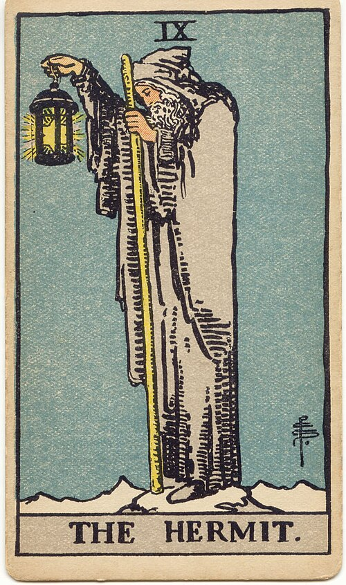
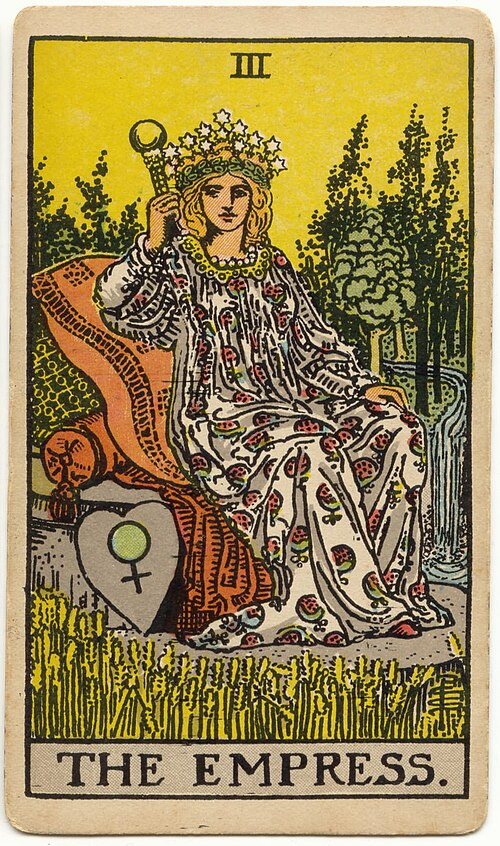
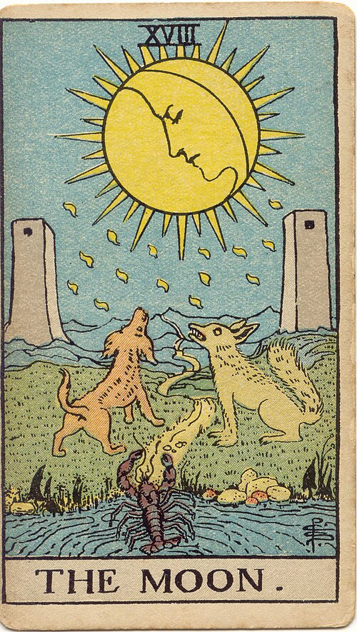
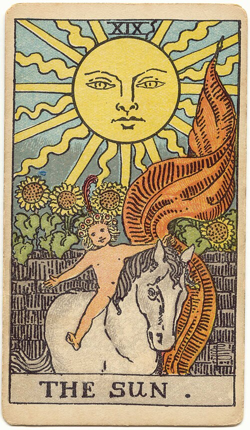

Choose your spread
Start with a familiar layout, from one card to a full Celtic Cross.
A thoughtful tarot companion for iOS
Move freely between the shape of your spread and the meaning of every card. Veil remembers exactly where you were.
II · THE PRESENT
Intuition · mystery · inner knowing
Quiet the noise around you. The answer is already taking shape beneath the surface.
POSITION 2 · THE PRESENT
This position holds the energy at the heart of your question—the influence asking to be seen before you move forward.
Your card stays open when you check the layout.
Tap any position and return right where you left off.
The reading stays whole
Most tarot apps make you choose between seeing the spread and understanding the card. Veil keeps both close—and preserves your exact place as you move between them.
Start with a familiar layout, from one card to a full Celtic Cross.
Let Veil deal, or use the physical deck already in your hands.
Move between meanings and positions without breaking your focus.
Two ways to read
Whether you want a complete digital reading or only a quiet guide beside your favorite deck, Veil meets you there.

Digital deck
Choose a deck design, decide whether to include reversals, and let Veil deal the spread.
Bring your own deck
Use Veil as a beautiful layout and meaning guide while your own cards stay on the table.
Short readings that say something useful, with longer source-informed interpretations when you want to go deeper.
Clear position descriptions and a standard ten-card Celtic Cross—not a vague approximation.
Save readings, questions, notes, personal meanings, favorites, and the patterns that repeat over time.
Turn inverted cards on or off at any time. Veil follows your reading practice instead of prescribing one.
A library with history
Switch deck designs without changing the cards in your spread. Begin with the complete 1909 Smith artwork, lovingly presented and carefully attributed.



Private by design
Veil keeps your journal and personal meanings on your device. No account is required, and there is no advertising or behavioral tracking.
Read the privacy policy →Version 1.0 is taking shape
Veil is currently in private TestFlight testing. Invitations are being shared in small groups while we prepare the first App Store release.
Beta testing details Requires an iPhone running iOS 17 or later.